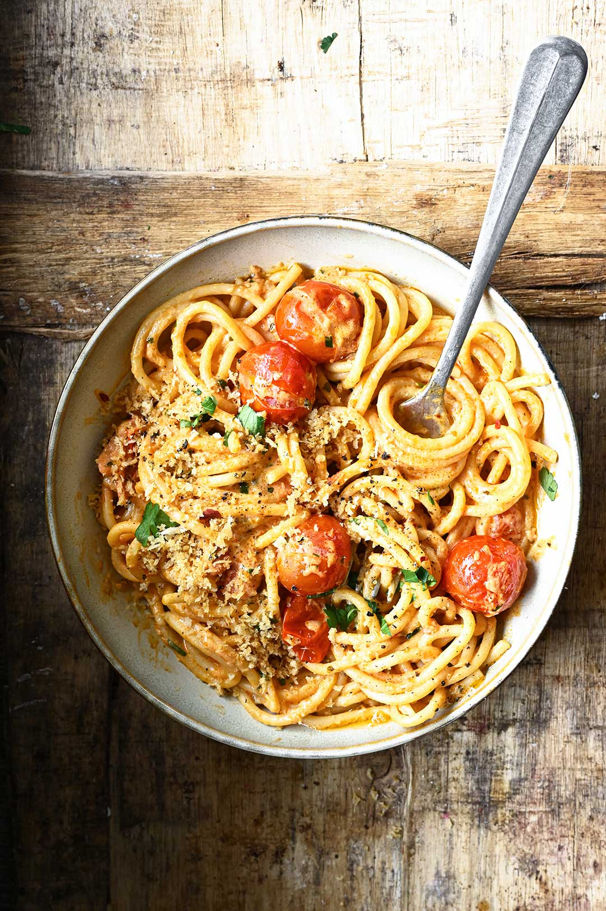

pasta-met-kerstomaatjes

ingredienten
- 400 g spaghetti
- 500 g kerstomaten
- 0.5 rood pepertje
- 1 teen knoflook
- 2 kneeptjes solo vloeibaar
- takjes basilicum
bereiding
-
Was en halveer de kerstomaten. Snijd het pepertje in ragfijne reepjes.
Pel en snipper de knoflook. Scheur de basilicumblaadjes grof. Kook de
pasta volgens de aanwijzingen op de verpakking beetgaar.
-
Verhit de vloeibare margarine en roerbak hierin de halve kerstomaatjes
met de reepjes peper gedurende 2 à 3 minuten. Bak dan de knoflook een
minuutje mee.
-
Giet de spaghetti af en voeg hem nog een beetje nat bij de tomaatjes,
strooi de basilicumreepjes erover en meng opnieuw.